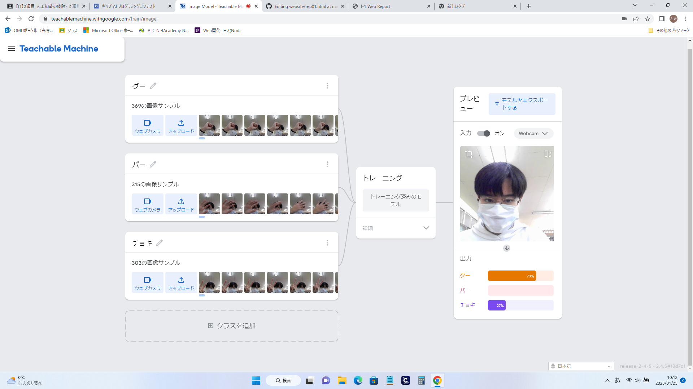

第2週目
2-1 １週目のレポートをHTMLで作る
１週目のレポート
1.内容
githubを用いて作成したwewbサイトに授業の内容や、感想を記入した。
2.感想
クラスメイトの人たちほとんどが先週までに終わらせていたので、早くパソコンについてや、githubについて習得したいと思った。
2-2 機械学習体験

1.内容
teachable machineを用いてグー、チョキ、パーをそれぞれ学習させ、コンピュータに自分の出した手が何なのかを判断させた。
2.感想
しっかりと学習させたと思っていても、どうしても判断が間違えていることがあったので、もう少し明確に判断できるようなサンプルを与えればよかったと思った。
2-3 VR（バーチャルリアリティー：Virtual Reality）会議室の体験
1.内容
VRゴーグルを装着して、仮想世界を体験した
2.感想
VR自体は楽しかったが、すごく酔ってしまった。